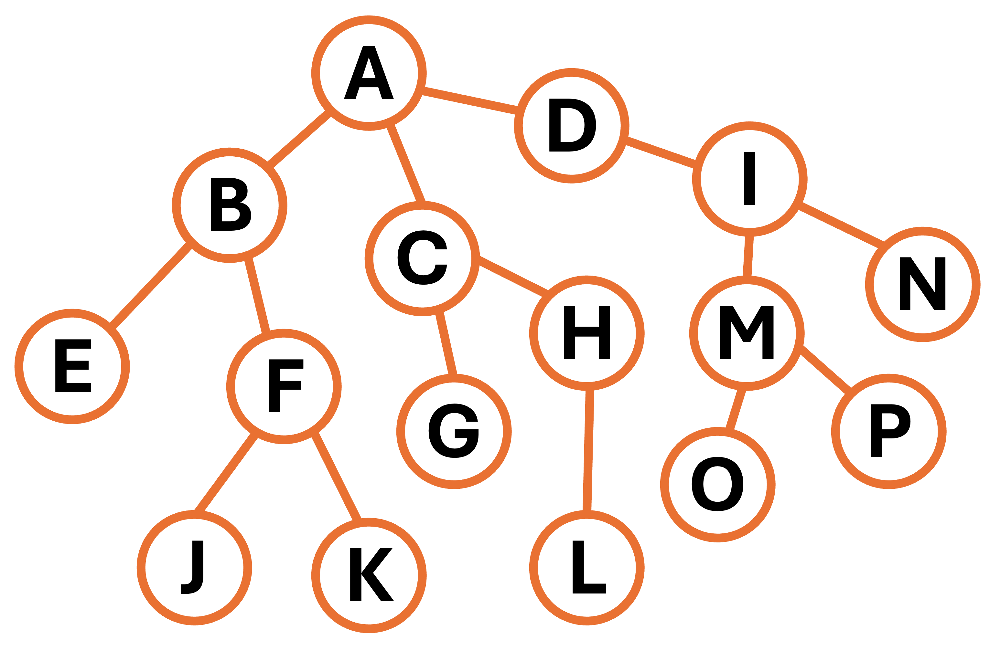

GCSE Link: None
 A tree is an acyclical, undirected, unweighted, fully connected graph with exactly one path between any two given nodes.
A tree is an acyclical, undirected, unweighted, fully connected graph with exactly one path between any two given nodes.
The graph on the previous page is not a tree because it is weighted and has cycles
(e.g. ACG), and therefore has multiple paths from A to G.
 A rooted tree is a type of tree with a root node.
A rooted tree is a type of tree with a root node.
The root node is usually shown at the top. This is the only node with no parent.
Diagram 1 shows an example rooted tree with 16 nodes.
 Diagram 1
Diagram 1

A is the root node, as it doesn't have a parent. Nodes EGJKLNOP
are called "leaf nodes", as they don't have any children.
 A binary tree is a type of rooted tree where each node has at most two children.
A binary tree is a type of rooted tree where each node has at most two children.
The tree in Diagram 1 is not a binary tree because A has three children:
B, C, and D
The trees used in Huffman compression are binary trees.
Binary trees can also be used for efficient searching algorithms:
 A binary search tree is a binary tree where items are inserted in a special order for more efficient access.
A binary search tree is a binary tree where items are inserted in a special order for more efficient access.
Example 1 shows some pseudocode for a binary search tree insertion function.
 Example 1
Example 1
SUBROUTINE insert(root, item)
IF item < root THEN
IF tree.left ≠ null THEN
insert(tree.left, item)
ELSE
tree.left ← item
ENDIF
ELSE
IF tree.right ≠ null THEN
insert(tree.right, item)
ELSE
tree.right ← item
ENDIF
ENDIF
ENDSUBROUTINE
To add another item to the tree, we compare it to the root node. If it is less than the root node, it goes on the left. If it is more, it goes on the right. We continue comparing until there is a free space.
 What are some other uses of trees?
What are some other uses of trees?
For example, for storing hierarchical structures or for syntax processing (with brackets etc.).